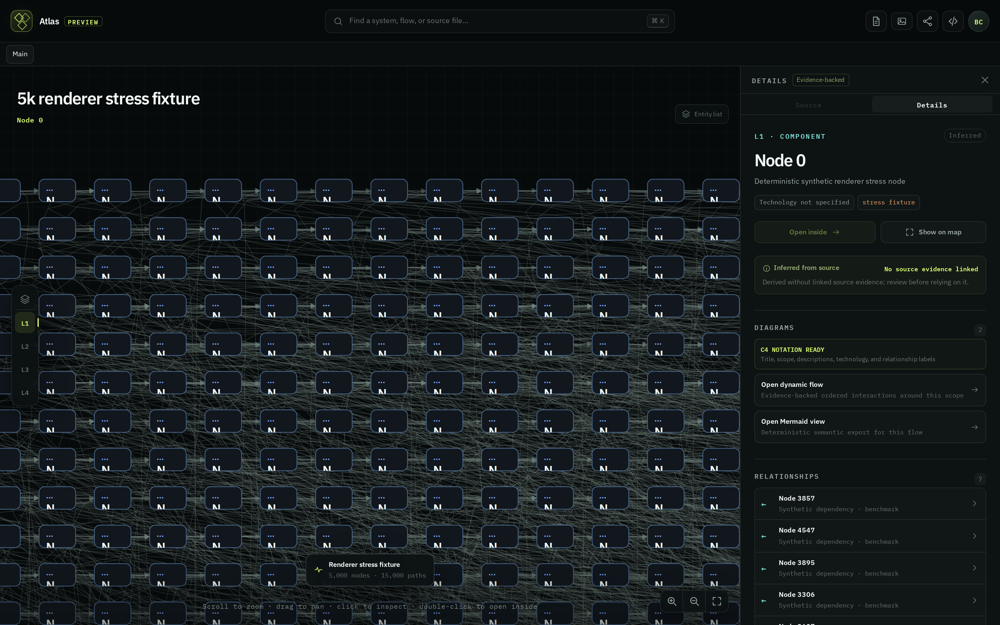
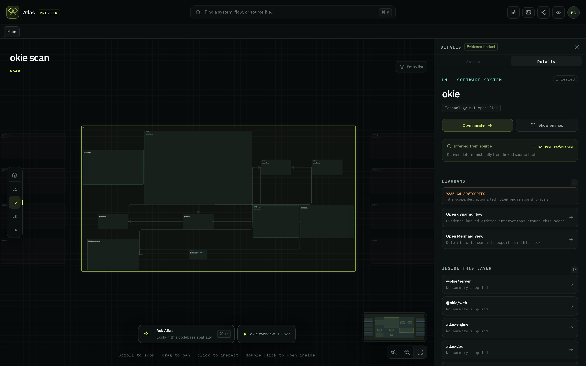

CLA-36 · Frame 3 of 4
Two shots in the pack show the same failure from opposite ends. The 5,000-node stress scene degrades into identical rounded rectangles behind a uniform grey haze of 15,000 edges. The real 1,778-entity self-scan renders nested containers as near-invisible dark-on-dark boxes with sub-pixel labels. In both cases the map is drawing everything it knows and telling you nothing.
The fix is not a better layout. It is refusing to draw what cannot be read, and saying so.
Today — density collapse, twice
08a · 5,000 nodes / 15,000 paths

08b · real self-scan, 1,778 entities

Proposed
Budgeted canvas · over budget, groups collapse to counted pucks and the map says why
okie · 1,778 entities · 3,724 relations
14 Rust crates · 1,204 symbols is a fact a reader can act on. Fourteen unlabelled rectangles are not. The puck is a real target: click expands it in place.Showing 34 of 1,778. The product already does this well inside isolate mode (Showing 1 of 70) and inside the relationships list — it just never does it for the map as a whole.08a without touching layout.